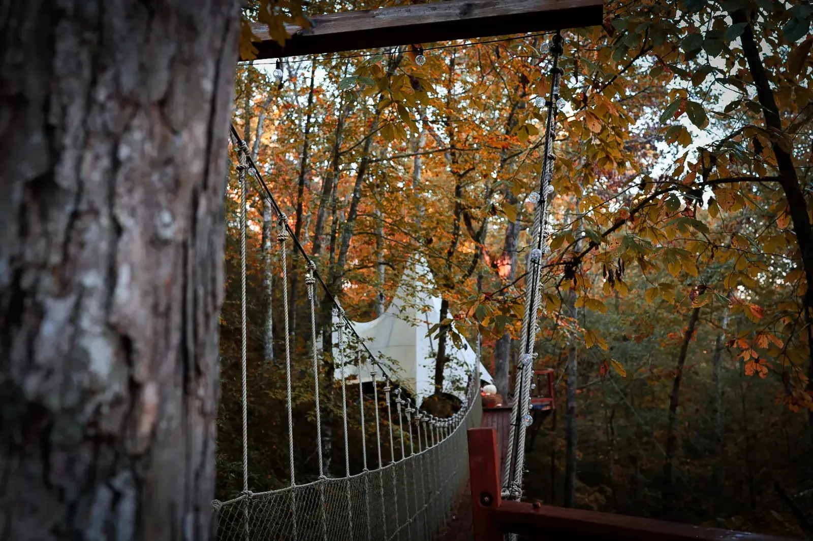

Dahlonega, Georgia · 1,470 feet
Elope in Dahlonega
We're in Dahlonega, Georgia, on forty-two acres of forest, with a hand-built treehouse sixty feet up in it. The hundred-foot rope bridge to its door becomes your aisle.

How we found it
A small town with wineries and mountains
There's a place in the North Georgia foothills where the road drops through a tunnel of mountain laurel so thick the branches nearly meet overhead.
Some of Livy's friends had been to a wedding in a small town with wineries and mountains, a place called Dahlonega. “What about there?” she said. Mick had never heard of it. Dahlonega was supposed to be a weekend away, not a life change.
So on a cold January morning, with fog still burning off the valley, they drove down a driveway lined with mountain laurel. Livy said it before they had even seen the house: “This is it. Come on.”
They live here now: Mick, Livy, Aurora and Tilly Mac. When you arrive, the people who designed and built your treehouse are the same people handing you a welcome basket.

The aisle
The bridge becomes the aisle. The canopy becomes the cathedral.
Your ceremony begins on solid ground. You walk together toward the rope bridge: a hundred feet of suspended pathway over the forest floor, swaying gently between two ancient white oaks. Every step is a choice. Every step is toward each other. By the time you reach the other side, the ordinary world is behind you, and you're standing in the canopy, sixty feet above the earth.
Say your vows on the deck of a treehouse a family built with their own hands. Let the forest witness it. Let the silence hold it.
Then stay the night. Wake up married in the sky.
“This property is private and intimate, but very close to amazing wineries and restaurants.”
Downtown Dahlonega
Gold rush history and small-town character
Dahlonega sits at the heart of Georgia's wine country. The square still has its courthouse with the gold-leaf steeple, surrounded by local shops, restaurants and places that have nothing to do with a chain.
Picnic Cafe is small-town, personal, genuine: great sandwiches and baked goods, the perfect quick lunch before you explore the square. Everyone stops at the Dahlonega Fudge Factory, family-owned since 1982. It's part of the trip. Paul Thomas Chocolates makes more than 120 handmade recipes on site, for couples who want something special to bring back to the treehouse.

The treehouse
A canvas peak, sixty feet up
At dusk the canvas peak glows from the inside, like a lantern somebody lit for you. The treehouse is hand-built, sixty feet up, on forty-two acres of forest in Dahlonega, Georgia.
The windows work like a tent's: canvas you roll up and tie back. A chandelier hangs over the bed, on a dimmer. Out on the deck there's a fire table. Up on the Sky Deck there's a pizza oven, and a cast iron pan that goes into it and cooks just about anything, from eggs to steak. There's a projector screen for movie night. The water comes from the property's own well.
There is no stove and no fridge. There's a big cooler on the deck, and you bring the ice.
How it works
Tell us the day. We answer fast.
Write to us with the day you have in mind and what it's for. We answer fast. If you'd rather talk, call or text 706-502-4823.
For a stay, the calendar does the rest. Choose your dates and the total appears, taxes and cleaning included, with your booking agreement shown in full before you pay.
For a ceremony, we talk it through first. Then we send the agreement. It is shorter than it looks, and we settle the ceremony time together closer to the day. Sign it, and the date is yours.
Good to know
The facts, with their sources
Dahlonega is the county seat of Lumpkin County, in the foothills of the North Georgia mountains, approximately 70 miles north of Atlanta.
City of Dahlonega, read October 29, 2026
Gold was discovered in 1828 in what is now Lumpkin County, setting off one of the first major gold rushes in the nation.
City of Dahlonega, read October 29, 2026
Twenty years before California's gold rush of 1849, thousands of prospectors came into the Cherokee Nation in north Georgia: the beginning of the country's first gold rush.
Georgia State Parks, Dahlonega Gold Museum Historic Site, read October 29, 2026
The Dahlonega Gold Museum is housed in the 1836 Lumpkin County Courthouse, one of the oldest courthouse buildings in Georgia.
Georgia State Parks, Dahlonega Gold Museum Historic Site, read October 29, 2026
Between 1838 and 1861 a U.S. Branch Mint in Dahlonega struck gold coins: the Half Eagle, the Quarter Eagle, the Gold Dollar and the Three Dollar Gold piece.
City of Dahlonega, read October 29, 2026
Dahlonega and Lumpkin County hold 12 wine-tasting rooms and eight wineries.
Dahlonega-Lumpkin County Visitors Bureau, read October 29, 2026
Dahlonega is the closest town to Amicalola Falls State Park and its Appalachian Trail Approach Trail.
Appalachian Trail Conservancy, read October 29, 2026
Questions
Everything you're wondering
Where can we say our vows?
On the rope bridge, beside the Fire Circle on the forest floor, or on the private deck of your treehouse, sixty feet in the air. The Crossing and The Elevation include our signature rope bridge ceremony.
Where do we eat after?
Up top, the pizza oven on the Sky Deck with its cast iron pan, the stainless steel grill over the Fire Circle, and a big cooler on the deck; bring the ice. For a nice dinner in town, Montaluce, the best food in wine country, where the restaurant is the real draw. For a burger, Spirits Tavern on the square. Call ahead on weekends.
What is there to do the next day?
The Consolidated Gold Mine is 200 feet underground at a constant 60 degrees, with a guided tour through the original tunnels and gold panning included. Underground means weatherproof. Or Wolf Mountain Vineyards, for a Sunday brunch that books up fast.
How many people can be on the bridge?
The bridge is rated for eight people at one time, everyone counted: on the bridge that is the two of you, your officiant, and up to five more, your photographer among them.
What should we bring?
Comfortable shoes for the trails. Layers, because mountain weather changes. Groceries if you plan to cook, and ice for the cooler. A book you've been meaning to read.
Inquire
Your marriage deserves a beginning this dramatic
Tell us the day you have in mind. A date, or just a month. How many of you. What it's for, in your own words. We answer fast.
Prefer to talk? Call us at 706-502-4823 or email stay@loxleyforest.com
Read on